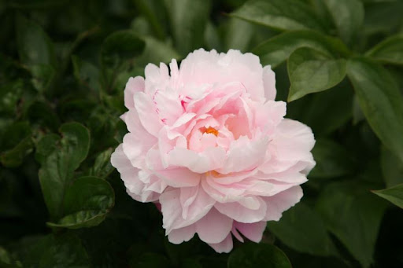

플리니우스가 기록한 바에 따르면, 모란은 딱따구리가 가장 좋아하는 꽃이어서
누군가 그 꽃을 따려는 걸 보면 날아와 눈을 쪼아 버린다고 한다.
아폴론이 트로이 전쟁에서 다친 신들을 모란꽃으로 치료해주었다 해서 고대 그리스에서는 약으로
환자를 치료하는 의사를 '페오니'라 부르기도 했다. 페오니라는 이름이 의학의신
아스클레피오스의 제자 페온에서 비롯되었다는 이야기도 있다.
페온이 상처 입은 플루토를 치료해 되살려내는 등 너무 큰 성공을 거두자 질투를 느낀
아스클레피오스는 제자를 해치려 했다. 그때 플루토가 페온을 구하고 모란꽃으로 변하게 해 주었다.
먼 엣날 중국에 매일 책과 씨름하며 가끔 꽃을 돌보는 것만이 취미인 학자가 홀로 살고 있었다. 어느 날 한
아리따운 여인이 예고도 없이 찾아와 하녀로 써 달라고 부탁했다. 학자는 말 상대도 없이 혼자 살아가기가 외롭기도 하고
집안일을 할 일손도 부족하던 터라 기쁜 마음으로 그녀를 고용했다.
학자는 시간이 지날수록 하녀가 점점 더 마음에 들었다. 그녀는 단순한 하녀가 아니라
학문적인 조력자 역할까지 할 수 있을 정도로 학식도 높았다. 몸에 밴 교양과 예법으로 보아 어느 유서 깊은
집안의 규수이지, 결코 하녀 일이나 할 사람이 아니었다.
젊은 학자는 자랑스러운 마음으로 아는 사람들에게 하녀를 소개했다.
보는 사람마다 그너의 뛰어난 미모와 학식에 놀라움을 감추지 못했다. 그러나 여인은 유명한 도사 한 사람이
학자를 방문하기로 한 날부터 완전히 종적을 감추어 버렸다.
젊은 학자는 미친 듯이 하녀를 찾아 헤매다가, 어두운 복도에서 문득 그녀가 마치 유령처럼 스쳐 지나가는 것을 목격했다.
학자가 서둘러 따라갔지만 미처 손이 닿기도 전에 한 폭의 그림처럼 벽에 스며들었다.
벽 속의 그림이 입술을 움직여 말했다.
"사실 저는 인간이 아니랍니다.
저는 주인님께서 정성스럽게 돌보아 주신 모란꽃의 정령이에요.
주인님의 따뜻한 사랑 덕분에 제가 인간의 모습으로 나타날 수 있었습니다.
주인님께 봉사할 수 있어서 정말로 기뻤습니다.
이제 그 도인이 오면 당신의 사랑을 결코 용납하지 않을 거에요.
그러면 제 모습을 유지할 수도 없게 되겠죠.
이제 꽃으로 돌아갈 수밖에 없답니다."
학자가 아무리 설득해도 그녀의 형상은 점점 희미해져만 갔고 결국 완전히 사라져 버렸다.
그날 이후로 그녀는 다시 나타나지 않았다. 학자도 식음을 전폐하고 슬피 울다가 세상을 떠나고 말았다.
